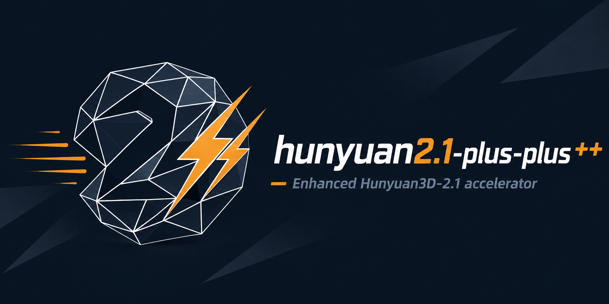
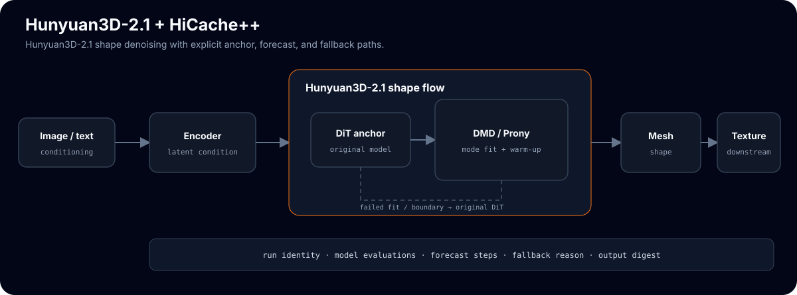

Hunyuan3D-2.1 image-to-3D with exponential velocity cache
Tencent's Hunyuan3D-2.1 image/text-to-3D, accelerated by the HiCache++ exponential velocity cache on its DiT flow-matching loop. On most sampling steps the DiT forward is skipped and the flow-matching velocity is forecast from cached anchors, so the DiT runs only every interval steps.
git clone https://github.com/Archerkattri/hunyuan2.1-plus-plus.git
cd hunyuan2.1-plus-plus
pip install -r requirements.txt
# model weights are not committed; download Hunyuan3D-2.1 from upstream
01
Evidence
| DMD F-score at interval-5 | ≈ 0.86 historical Toys4K result, 3-seed evidence (not current validation) |
|---|---|
| Hermite F-score at interval-5 | ≈ 0.74 polynomial baseline drops where DMD holds |
| Uncached baseline F-score | ≈ 0.91 full-compute reference, excluding one Go-ICP-degenerate sphere |
| CPU contract tests | 4 passed DMD adapter, snapshot, fallback, and CFG-index contracts |
| DMD snapshot window | ≥ 4 snapshots uniform window required; shorter windows fall back to Hermite |
| Example cache schedule | interval 5 with first_enhance 2 and history 6 |
02
Media


03
Install & verify
python -m hy3dshape.hy3dshape.hicache_dmd # CPU self-test, no GPU or model needed python -m pytest tests/ -v # 4 passed
04
Limits
What this release does not claim (from the release notes):
- GPU speedup validation and weight-gated demo cells.